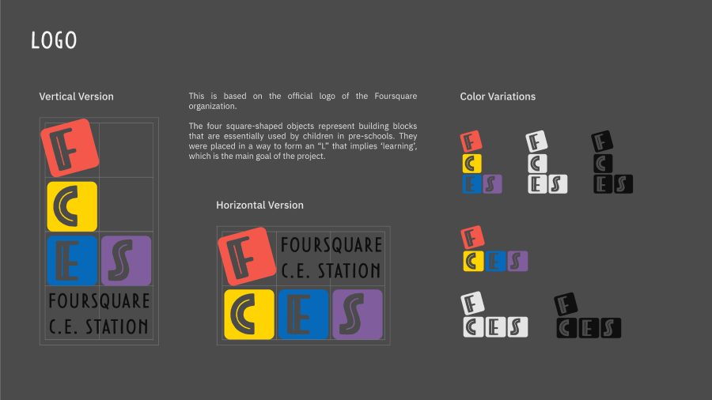
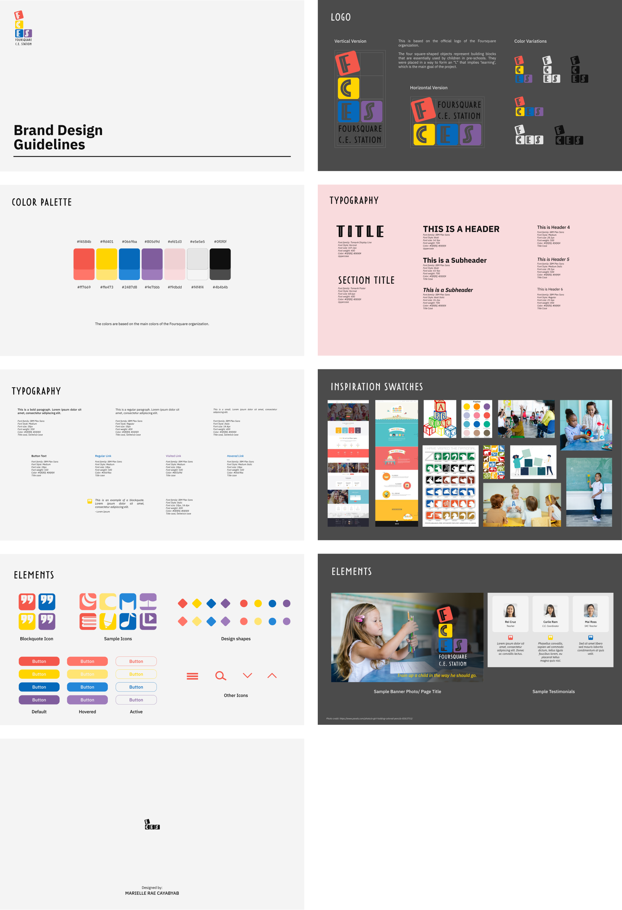
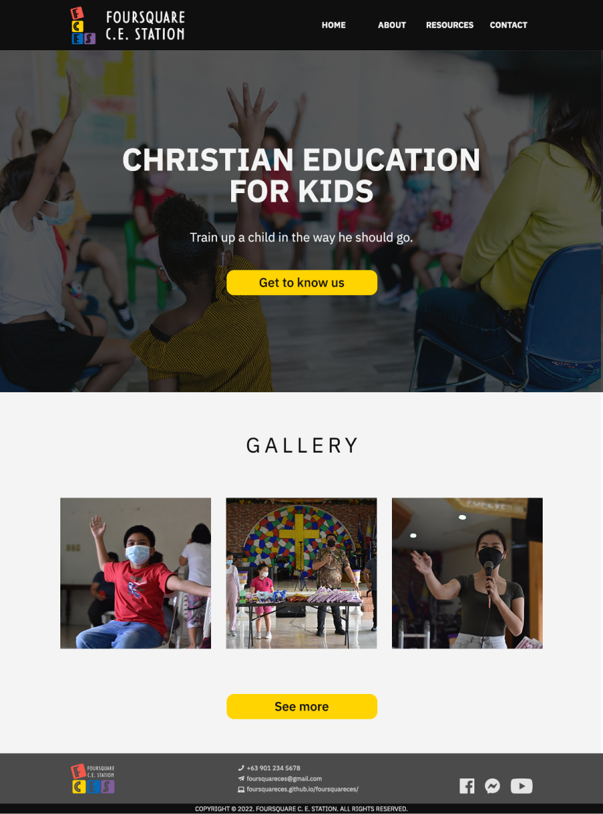
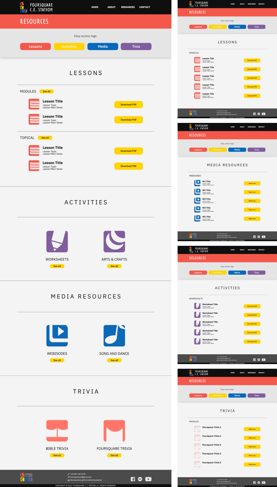
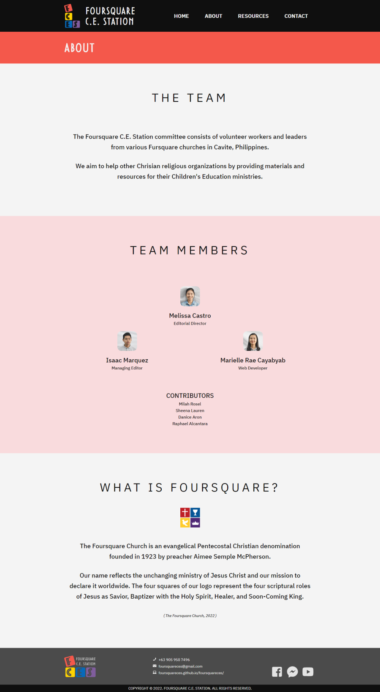
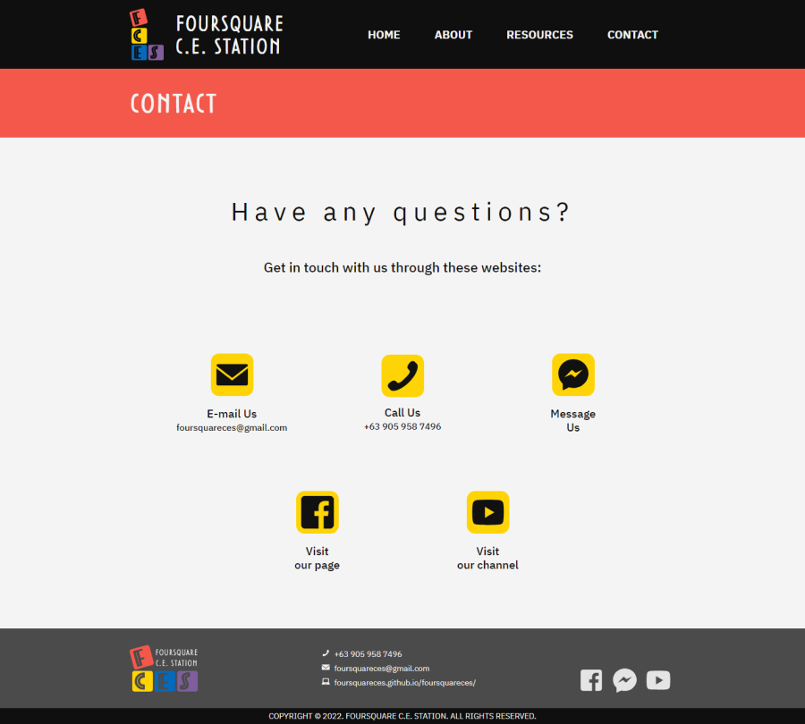
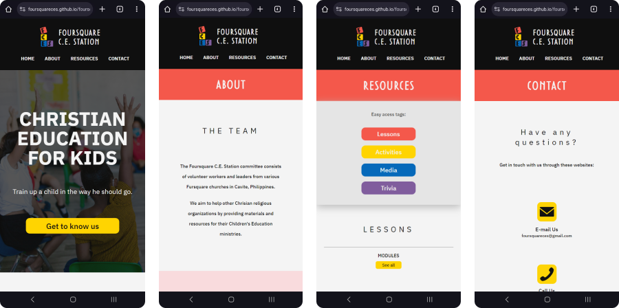

Foursquare C.E. Station Website
A user-friendly website for Christian educational resources. Created as Multimedia Integration final course requirement, and potentially a future church creatives project.
SKILLS
Web Design, Web Development, Graphic Design, Layout, and Digital Illustration
TOOLBOX
Adobe Photoshop, Illustrator, & Dreamweaver, Visual Studio Code, and GitHub

This project emphasizes Children's Christian Education, specifically focusing on the doctrine of the Foursquare Church. Its objective is to support other Christian religious organizations by offering materials and resources for their Children's Education ministries, including Sunday School and Vacation Bible School programs.
Please note that this is a demo website, and some provided information serves as examples only.
Branding Guidelines
Given that the target users of this website are church workers in Children's Education Ministry, I developed a branding strategy to establish its unique identity while maintaining alignment with the visual branding of the Foursquare Church.
Main Website
Homepage Design
I structured the homepage with an industry-standard layout to ensure user-friendliness and ease of navigation. It features a prominent landing section showcasing the logo, banner photo, headline, and a call-to-action button directing users to the About page. Additionally, users can access a photo gallery showcasing the organization's activities from the homepage.
Resources Page
The highlight of the website is the Resources Page, where users can find a variety of downloadable and viewable links to learning materials like lesson plans, media resources, activities, and trivia resources. The page features access tags for straightforward navigation, helping users quickly find which type of resources they need.
About Page
The About Page provides valuable insights into both the project team and the organization they represent. Users can explore details about each team member, including their respective roles. Additionally, the page features a brief introduction to The Foursquare Church in the subsequent section.
The names and roles listed in the Team Members section are placeholders used to safeguard the privacy of individuals in the photos. Please note that this is a demo website, and the provided information serves as examples only.
Contact Page
The Contact Page offers users multiple communication methods such as email, phone, and Facebook Messenger, providing convenient ways to reach out to the team. Additionally, it includes links to the team's official Facebook page and YouTube channel for further engagement.
Responsiveness
This website is mobile-responsive, ensuring an optimal viewing experience across all devices, including tablets and smartphones.